为什么现代的JVM分析器仍然偏爱安全点？
本文翻译自Why JVM modern profilers are still safepoint biased? | It’s All Relative (jpbempel.github.io)
欢迎斧正
简介
我在之前的博客文章中介绍了如何生成调试符号并用于解析异常堆栈跟踪中的帧。除了异常，堆栈跟踪还广泛用于分析器中。旧的分析器的生成是基于 JVMTI GetAllStackTracesAPI（或其他等价的形式），但是这种技术存在一些问题（安全点偏差）。新的分析器则是基于AsyncGetCallTrace，一个没有文档记录的的 API，它不需要所有线程都处于安全点就可以收集堆栈跟踪。Nitsan Wakart 在这篇文章中描述了它的原理。在本文中，我们将探讨那些依赖于前面描述的调试符号解析的分析器的现状。
Async-Profiler / Honest profiler
最受欢迎的基于AsyncGetCallTrace的分析器之一是Andrei Pangin的Async-Profiler。即使线程不处于安全点，Async-Profiler 也会调用AsyncGetCallTrace以收集堆栈跟踪。
Richard Warburton的Honest Profiler也是使用相同的api来实现的
JFR
JDK Flight Recorder 用于采样方法执行情况，使用一个计时器并在每个固定时间间隔选择最多 5 个 Java 线程，验证这些线程是否正在执行 Java 代码（由 JVM 维护的内部状态）并且 尽管它们没有共享相同的代码，但是他确实是以和AsyncGetCallTrace相似的方式来收集堆栈追踪。JFR 能够在代码的任何点收集，因为不需要等待安全点。
解析最后一个栈帧
收集堆栈跟踪后，它们将针对 JVM（解释器或 JIT）给出的调试符号进行解析，如我上一篇文章中所述。如果您查看堆栈跟踪，堆栈的底部只是一系列栈帧。有些是真实的栈帧（对方法的真实调用），而另一些是虚拟的栈帧，而代码实际上是内联到调用者中的（真实的栈帧）。正如我们之前所了解的，调用者正在处于安全点，其中包含将它们解析为一对方法名称和行号所需的所有调试信息。安全点是代码中的一个点，其中 栈 可以被安全地遍历（译者：原文是walk，可以参考j9引入的StackWalking API），并且所有调试信息都可用并且对象也是可达的。请注意，需要停止所有线程的 VM 操作（如 GC）和安全点是两件不同的事情。暂停的线程都处于安全点以安全地执行 VM 操作。
只有代码当前正在执行的最后一帧可以在方法内的任何位置，包括处于安全点之外。如果我们在安全点之外，我们没有调试信息，因此我们无法正确解析最后一帧。此外，由于优化/内联代码会模糊行号，因此很难映射回实际的行号信息（另请参见这篇文章）。
JFR 和AsyncGetCallTrace是如何设法获得最后一帧的？信息准确吗？我们有精确的行号吗？
Async-Profiler
Async-Profiler 提供了几种输出格式：
- 火焰图 (svg/html)
- text (flat/traces/collapsed)
- JFR
对于AsyncGetCallTrace使用的前 2 个格式，您将永远不会看到行号，因为作者选择不处理/不显示它们。

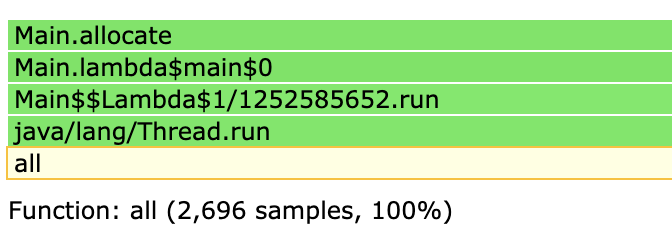
对于以JFR格式的输出，行号从AsyncGetCallTrace 以JFR 文件格式传输/保留。这样，我们可以使用 JDK Mission Control (JMC) 打开文件，以查看最后一帧哪些行号被解析了
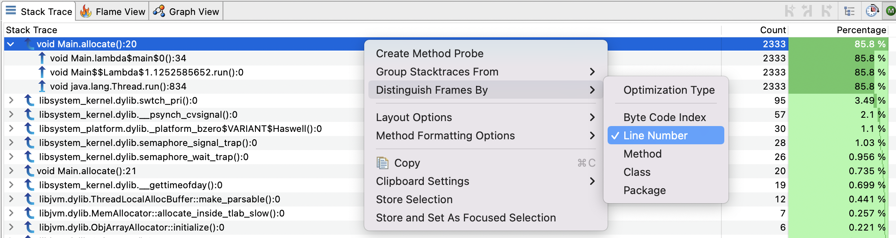
Honest Profiler
Honest Profiler 可以使用 flat profiles 输出行号：
Flat Profile (by line):
(t 2.6,s 2.6) Profile::noLoopBench @ (bci=291,line=140)
(t 2.6,s 2.6) Profile::noLoopBench @ (bci=607,line=164)
(t 2.5,s 2.5) Profile::noLoopBench @ (bci=212,line=134)
(t 2.5,s 2.5) Profile::noLoopBench @ (bci=370,line=146)
(t 2.5,s 2.5) Profile::noLoopBench @ (bci=449,line=152)
(t 2.5,s 2.5) Profile::noLoopBench @ (bci=537,line=159)
(t 2.5,s 2.5) Profile::noLoopBench @ (bci=181,line=132)
(t 2.5,s 2.5) Profile::noLoopBench @ (bci=142,line=129)
(t 2.4,s 2.4) Profile::noLoopBench @ (bci=339,line=144)
(t 2.4,s 2.4) Profile::noLoopBench @ (bci=528,line=158)
(t 2.4,s 2.4) Profile::noLoopBench @ (bci=133,line=128)
(t 2.3,s 2.3) Profile::noLoopBench @ (bci=300,line=141)
(t 2.3,s 2.3) Profile::noLoopBench @ (bci=616,line=165)
(t 2.3,s 2.3) Profile::noLoopBench @ (bci=102,line=126)
(t 2.3,s 2.3) Profile::noLoopBench @ (bci=497,line=156)
(t 2.3,s 2.3) Profile::noLoopBench @ (bci=260,line=138)
(t 2.2,s 2.2) Profile::noLoopBench @ (bci=221,line=135)
(t 2.2,s 2.2) Profile::noLoopBench @ (bci=458,line=153)
(t 2.2,s 2.2) Profile::noLoopBench @ (bci=576,line=162)
(t 2.2,s 2.2) Profile::noLoopBench @ (bci=379,line=147)
JFR
所记录的格式允许为每一帧存储行号信息或字节码索引，在 JMC 中您可以通过行号进行区分。如果您有一个对同一方法有多次调用的方法，这很有用。如果没有行号信息，则更难以关联到代码
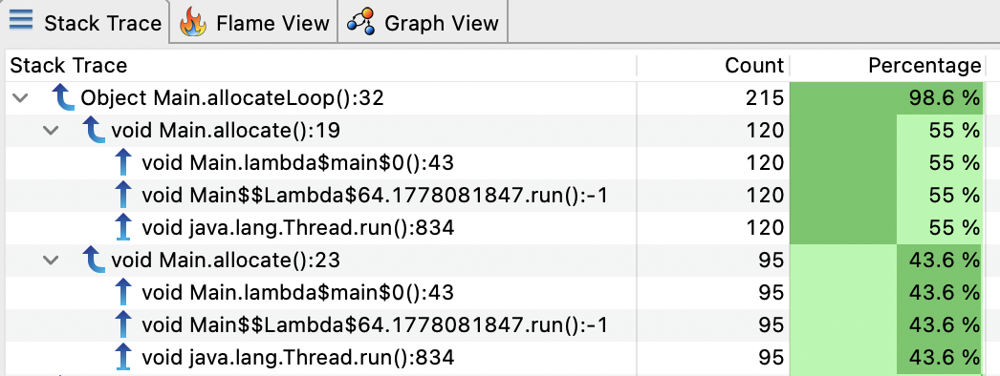
调试信息和安全点
默认情况下，调试信息由发出安全点的 JIT 记录，例如在调用方法时，这便于为异常构建堆栈跟踪。但是，在使用AsyncGetCallTrace的采样分析手段时，如果我们想用调试信息解析最后一帧，我们需要寻找附近的安全点。当 JVM 发现当前 PC 处于 Java 栈帧中时，它会尝试通过CompiledMethod::pc_desc_at()方法获取到真正的调试信息（调用PCDesc），这些方法是从这里
被调用以帮助AsyncGetCallTrace执行的。如果找不到PCDesc，然后，它将尝试通过搜索方法的末尾来找到最近的“below”，并使用CompiledMethod::pc_desc_near(),它是从这里](https://github.com/openjdk/jdk/blob/affbd72aa3dce80e2ad54ff775c6f7469f38b05b/src/hotspot/share/prims/forte.cpp#L171))调用被调用以帮助`AsyncGetCallTrace`执行和 这里)被调用以帮助执行JFR
为了演示这种行为，让我们举一个构造出来的例子：
L117 public static int noLoopBench(int idx) {
L118 int res = idx * idx;
res += (idx % 7) + idx * 31;
res -= (idx * 53) % 13 - idx;
res += idx * 1003 - (idx * 13 % 7);
res += (idx % 19) + idx * 37;
res -= (idx * 71) % 7 - idx;
res += idx * 97 - (idx * 53 % 29);
res += (idx % 7) + idx * 31;
res -= (idx * 53) % 13 - idx;
// ... skip for brevity ...
res += idx * 1003 - (idx * 13 % 7);
res += (idx % 19) + idx * 37;
res -= (idx * 71) % 7 - idx;
res += idx * 97 - (idx * 53 % 29);
L167 return res;
}
完整代码在 这里
我们通过将分析器attach到正在运行的程序上，使用带有 JFR 输出的 Async-Profiler 分析此方法：
java Profile &
./profiler.sh -d 30 -e itimer -o jfr -f profile_noLoop.jfr <pid>
这是它在 JMC 中的显示：
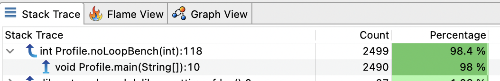
该方法几乎有 50 行长，但在几乎所有采样中我们只有第一行的信息。整个方法没有生成调试信息（没有安全点），除了在入口处。在这种情况下，我们所期望的是采样在方法的所有行中的均匀分布。但取而代之的是，当采样时，会找到最近的安全点，并使用与之关联的调试信息解析符号。
现在让我们尝试另一个带有循环的示例：
L72 public static int loopsBench(int idx) {
L73 int res = 0;
for (int i = 0; i < 5; i++) {
dst[i] = buffer[i];
}
res += dst[buffer.length-1] == 1 ? buffer[0] : buffer[1];
for (int i = 0; i < 5; i++) {
dst[i] = buffer[i];
}
res += dst[buffer.length-1] == 1 ? buffer[0] : buffer[1];
for (int i = 0; i < 5; i++) {
dst[i] = buffer[i];
}
// ... skip for brevity ...
res += dst[buffer.length-1] == 1 ? buffer[0] : buffer[1];
L114 return res;
}
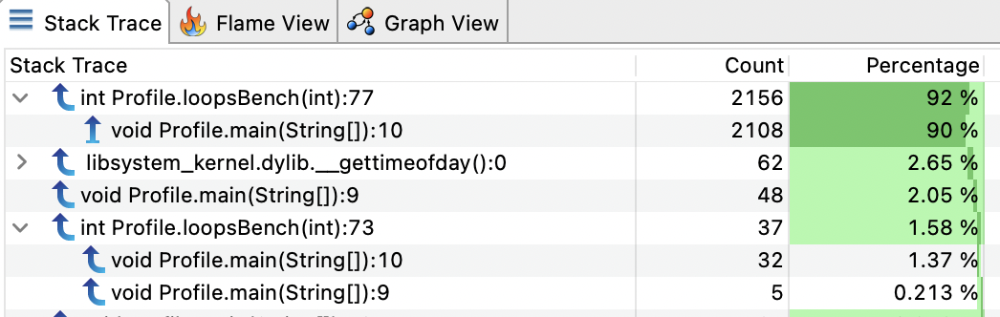
仅报告了 2 行（73 和 77）。但在我们的示例中，循环实际上是由 JIT 专门处理的有限循环优化，即不会发出安全点。让我们尝试使用long循环：
L72 public static int loopsBench(int idx) {
L73 int res = 0;
for (long i = 0; i < 5; i++) {
dst[(int)i] = buffer[(int)i];
}
res += dst[buffer.length-1] == 1 ? buffer[0] : buffer[1];
for (long i = 0; i < 5; i++) {
dst[(int)i] = buffer[(int)i];
}
res += dst[buffer.length-1] == 1 ? buffer[0] : buffer[1];
for (long i = 0; i < 5; i++) {
dst[(int)i] = buffer[(int)i];
}
// ... skip for brevity ...
res += dst[buffer.length-1] == 1 ? buffer[0] : buffer[1];
L114 return res;
}
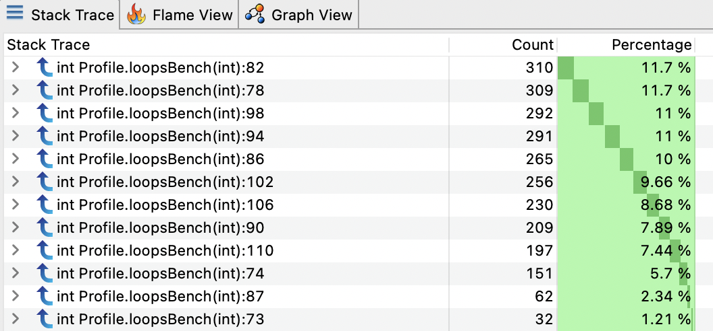
现在我们有了整个方法的分布良好的采样！但是内联呢？
我还制作了一个示例，其中包含 3 种不同的内联小方法：
public static int inlinedBench(int idx) {
L28 int res = 0;
res += compute1(idx);
res += compute1(res);
res += compute1(res);
res += compute1(res);
res += compute1(res);
res += compute1(res);
res += compute1(res);
res += compute1(res);
res += compute1(res);
res += compute1(res);
res += compute1(res);
res += compute1(res);
res += compute1(res);
res += compute1(res);
res += compute1(res);
res += compute1(res);
res += compute1(res);
res += compute1(res);
res += compute1(res);
res += compute1(res);
res += compute1(res);
res += compute1(res);
res += compute1(res);
res += compute1(res);
res += compute1(res);
res += compute1(res);
res += compute1(res);
res += compute1(res);
return res;
}
private static int compute1(int value) {
L61 return (value % 7) + value * 31 + compute2(value);
}
private static int compute2(int value) {
L65 return (value * 53) % 13 - value + compute3(value);
}
private static int compute3(int value) {
L69 return value * 1003 - (value * 13 % 7);
}
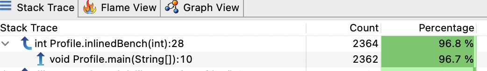
仅报告一行，因此内联方法时不会发出安全点。
如果我们禁用内联：
java -XX:-Inline Profile
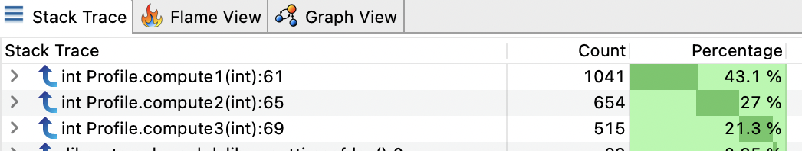
我们找到了我们的computeX方法，如果我们展开一个节点：
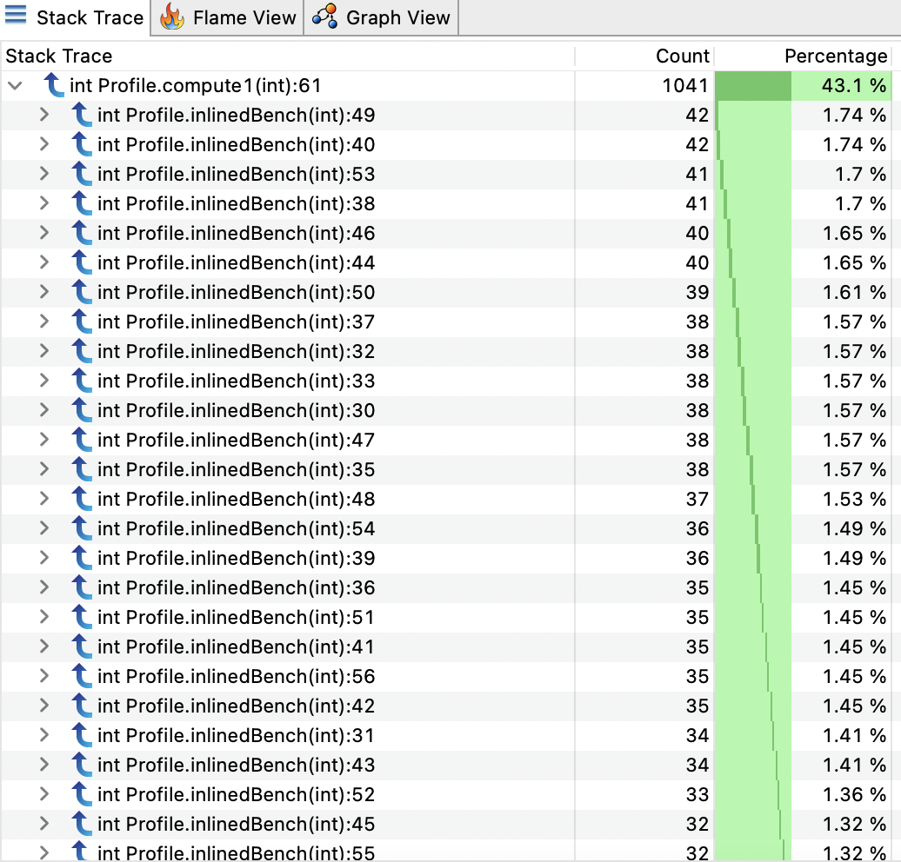
样本现在分布在整个inlinedBench方法中。
调试非安全点
有一个有趣的标志可以稍微修改上述行为：-XX:+UnlockDiagnosticVMOptions -XX:+DebugNonSafepoints. 即使 PC 不在安全点，此标志也会激活有关 PC 的更多调试信息的记录。这意味着我们可以为堆栈跟踪提供更精确的位置。调试信息越多，行号分辨率的样本就越精确。
让我们用我们的第一个例子来试试这个标志：
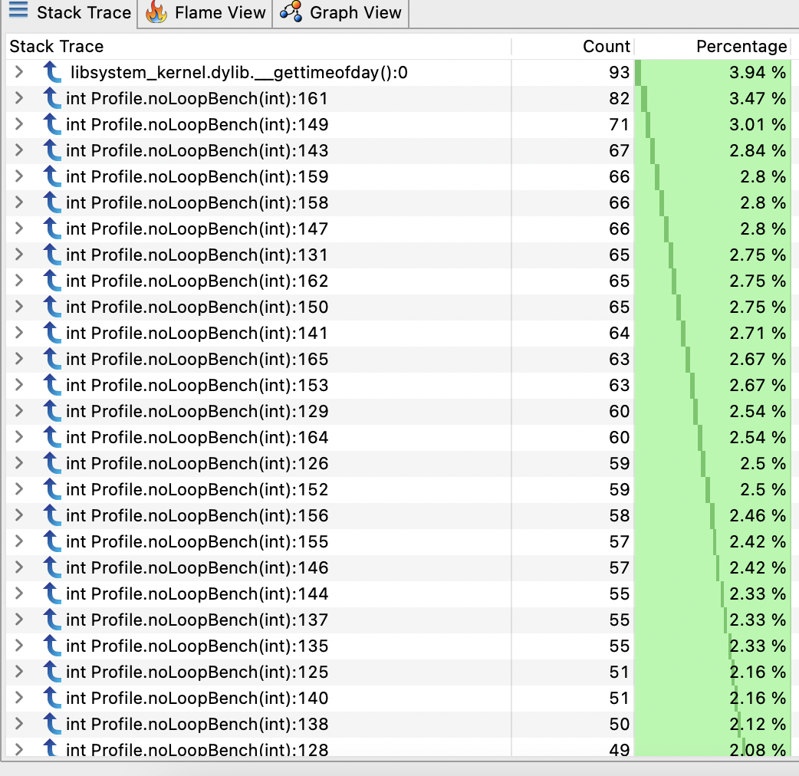
现在我们有更多的样本分布在noLoopBench方法中。
内联呢？
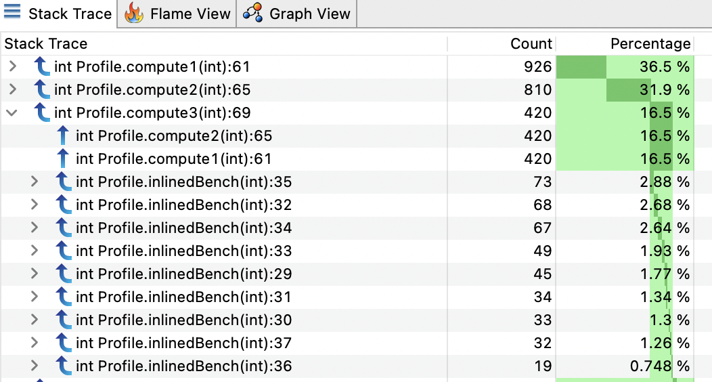
现在我们有了关于内联方法的所有信息以及调用它们的行号。
自动激活 DebugNonSafepoint
我们看到有一个 JVM 标志可以在没有安全点的情况下启用调试信息，但也有 2 种情况下DebugNonSafepoint会被自动激活：
JVMTI
如果 JVMTI agent 注册了回调CompiledMethodLoad，则该标志将被激活。Async-Profiler 在这里注册的回调。Honest Profiler 也在这里做了相似的事情
如果您在命令行上使用这些 JVMTI agent启动 JVM （-agentpath:profiler.so），这个标志将从一开始就被激活，并且所有编译的方法将在安全点之外生成调试信息。但是，如果您将agent附加到正在运行的实例上，则标志将仅在附加时开启。然后，只有新编译的方法才会适配该标志，并且已经编译的方法仍然只有安全点的调试信息。
PrintAssembly/CompileCommand
如果要打印方法的汇编代码，它还将激活标志以获得更多有用的汇编信息以匹配字节码/行号。
JFR
JFR 默认不激活DebugNonSafepoint。您必须手动启用它。这是JFR doc在某个时候推荐的。
性能影响
我已将noLoopBench方法代码放入带有和不带有DebugNonSafepoint标志的 JMH 基准测试中，发现没有显着差异。
Benchmark Mode Cnt Score Error Units
MyBenchmark.testDebugNonSafepoint avgt 25 156.209 ± 1.711 ns/op
MyBenchmark.testDefault avgt 25 159.069 ± 2.260 ns/op
标志只会在 JIT 编译时生成更多调试信息（映射 PC -> BCI -> 行号）是有意义的。它只会消耗更多的本机内存用于存储，但不会影响应用程序的运行时性能。
关于使用DebugNonSafepoint有一些注意事项。我们可能有关于在安全点之外的堆栈跟踪的信息。但是，这并不意味着在分析工具报告出来的方法执行时间会更精确。请参阅JDK-8201516和JDK-8281677。
结论
即使使用AsyncGetCallTrace或类似技术的新分析器不偏向于收集堆栈跟踪的安全点，但最后一帧的解析仍然偏向于记录的调试信息。默认情况下，它们处于安全点！这就是为什么那些分析器试图尽快激活标志DebugNonSafepoint以获得更精确的解析结果。我认为即使在生产中也始终激活标志没有问题，但需要注意本机内存消耗。它将帮助您在生产中持续进行分析。
参考
- The Pros and Cons of AsyncGetCallTrace Profilers by Nitsan Wakart
- Safepoints: Meaning, Side Effects and Overheads by Nitsan Wakart
- Why (Most) Sampling Java Profilers Are Fucking Terrible by Nitsan Wakart
- How Inlined Code Makes For Confusing Profiles by Nitsan Wakart
- Honest profiler
- Async-Profiler
- JDK-8201516
- JDK-8281677
多谢 Christophe Nasarre, Marucs Hirt & Nitsan Wakart的review